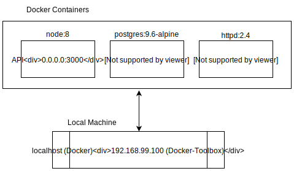

Application Security and Hardening
Geekwise Academy
Week 01 - Introduction to APIs and Development Tools
Instructors:
Corey Shuman
Slack Channel:
Github Repo:
https://github.com/coreyshuman/GeekwiseApplicationSecurity
Lecture Notes:
http://coreyshuman.github.io/GeekwiseApplicationSecurity/LectureNotes
Table of Contents:
Application Security is the processes and measures taken to improve the security of an application. This includes:
This class will focus on the development side of application security. An important part of secure development is following strong security practices as a development team. Before you can develop these practices, it helps to understand what threats and vulnerabilities you are trying to defend against. Therefore this class will be a hands-on opportunity to learn, perform, and defends against common web application vulnerabilities.
Hackers only need to get it right once. You need to get it right every time!
The following are common classes of application security threats from the book Improving Web Application Security
| Category | Threats / Attacks |
|---|---|
| Input Validation | Buffer overflow; cross-site scripting; SQL injection; canonicalization |
| Software Tampering | Attacker modifies an existing application's runtime behavior to perform unauthorized actions; exploited via binary patching, code substitution, or code extension |
| Authentication | Network eavesdropping ; Brute force attack; dictionary attacks; cookie replay; credential theft |
| Authorization | Elevation of privilege; disclosure of confidential data; data tampering; luring attacks |
| Configuration management | Unauthorized access to administration interfaces; unauthorized access to configuration stores; retrieval of clear text configuration data; lack of individual accountability; over-privileged process and service accounts |
| Sensitive information | Access sensitive code or data in storage; network eavesdropping; code/data tampering |
| Session management | Session hijacking; session replay; man in the middle |
| Cryptography | Poor key generation or key management; weak or custom encryption |
| Parameter manipulation | Query string manipulation; form field manipulation; cookie manipulation; HTTP header manipulation |
| Exception management | Information disclosure; denial of service |
| Auditing and logging | User denies performing an operation; attacker exploits an application without trace; attacker covers his or her tracks |
This table is from the Application Security page on Wikipedia
In 2016, reported data breaches increased by 40% and Yahoo announced the largest breach in history.
More Info: https://www.identityforce.com/blog/2017-data-breaches
“The fact security guidance is labeled as ‘Best Practices’ and not ‘Standard Operating Procedures’ is what attackers count on for success.”
Our basic application will give us an intruduction to NodeJS, Postgres, Postico, Postman, and Docker.
Click Here to go to the application page.The Docker environment for our basic application includes 3 docker containers. You can think of a container as a lightweight virtual machine running on your computer. Each container is built from an image which represents what the underlying operating system is for the container.
